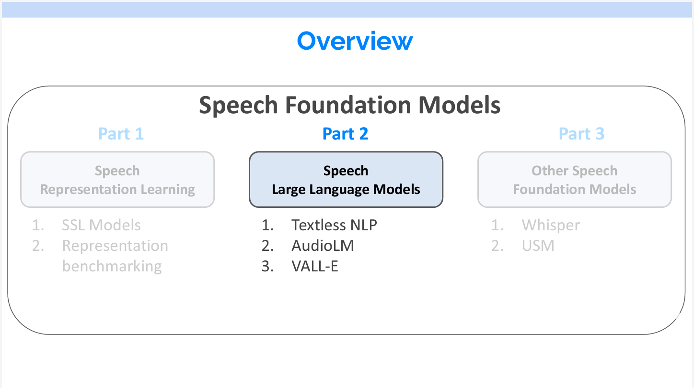
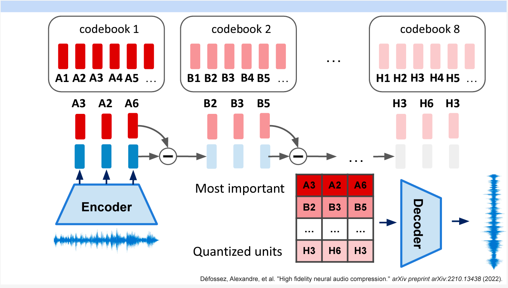
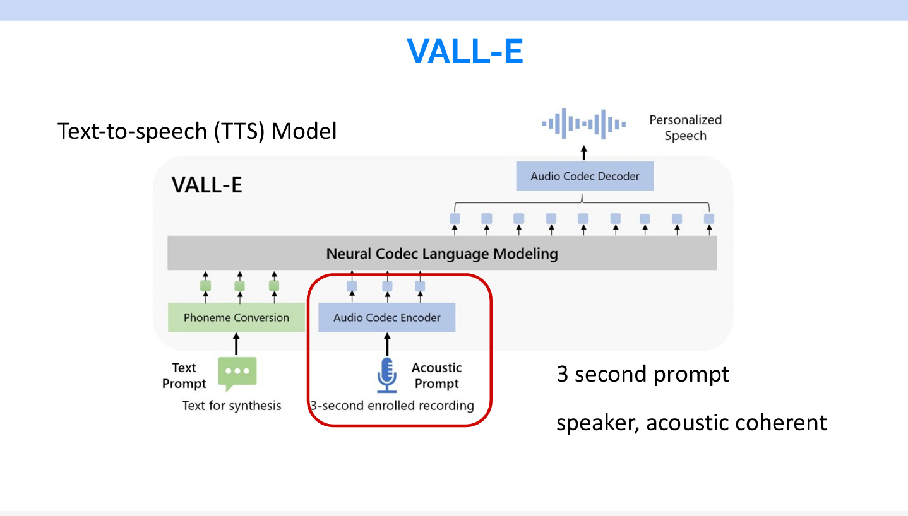

音声基礎モデルの紹介 Part2
音声基礎モデルに関する内容を3部分に分けて紹介しています。このポストはPart2と3について紹介します。
前のパートはこちらです。
内容はYoutubeで音声認識に関する講義に基づいています。
資料のリンクはこちらです。
今回の内容は音声基礎モデルです。全体は3部分に分けられます。
- Speech Representation Learning(音声表現学習)
- Speech Large Lanuage Models(音声大型言語モデル)
- Other Speech Foundation Models(その他の音声基礎モデル)
このポストはPart2から始まります。
Part2 Speech Large Language Models

Textless NLP Project
音声翻訳を行なう場合、通常はCascaded Systemという複数のモデルを繋ぐ方法が使われます。まず音声をテキストに変換し、変換されたテキストを機械翻訳のモデルに通して翻訳します。翻訳したテキストを再びTTSモデルで音声に変換します。
しかし、この方法だと、モデルを学習するためにテキストデータが必要になります。また、複数の中間ステップがあるため、中間ステップで一つ間違える最終結果が間違ってしまいます。
Textless NLPでは、中間ステップで生成されるテキストを「疑似テキスト（Psuedo text）」に置き換えることで、テキストを必要とせず、音声から音声へのエンドツーエンド学習が可能になりました。また、疑似テキストを用いて、現在のNLP技術を活用して中間ステップの改善ができます。
さらに、音声翻訳のみではなく、中間のモデルを差し替えることで別のタスクに対応することができます。例えば、Speech continuationの場合はGPTを使います。音声合成の場合は中間のモデルを使わないです。
Speech continuation（スピーチ・コンティニュエーション）は、音声認識や自然言語処理技術を用いて、話者の発言を他の話者が続けることができるようにする研究です。この研究は、人間と人工知能（AI）がスムーズにコミュニケーションできるようにすることを目的としています。具体的には、話者の言語パターンやスタイルを学習し、それに基づいて自然で適切なレスポンスを生成する技術を開発しています
Psuedo textの作り方はPart 1で紹介した音声の量子化と同じです。HuBERTを使って音声の特徴を抽出し、K-meansで得たカテゴリをTokenとして扱います。
Generative Spoken Language Modeling
Textless NLPでSpeech continuationの例を説明します。まず、HuBERTを使用して音声をトークンに変換します。ここでTokenを得たことで、次のステップは完全にNLPの領域になります。GPTと同じようなモデルを使って次のTokenを予測するモデルを作ることができます。
最後に予測されたTokenをDecoderに渡し、音声を合成してもらいます。音声合成モデルも学習する必要があります。学習の方法としては、音声とTokenのペアを用意して、Tokenをインプットし、音声をアウトプットするモデルを学習します。
中間のモデルは言語モデルなので、条件なしの音声生成もできます。一方で、条件なしでは、一見意味があるように見えるものが出力されますが、よく観察すると、意味が通じないものが生成されることがあります。
Speech Resynthesis
Textless NLPは音声合成もできます。一方、この場合はインプットから内容、音調、そして話者の3つの特徴量を抽出しています。
なぜここで別の特徴量が必要かというと、量子化することにより音声内容が抽出され、逆に話者の情報が落ちてしましました。下図の右の表でその実験結果があります。話者識別の精度について、量子化しないHuBERTだと99%の精度を得られますが、量子化の粒度が粗いほど話者識別の精度が悪くなります。CPCモデルも同じ傾向です。
同じモデルでコナンの蝶ネクタイ型変声機のようなVoice Conversionもできます。Vioce Conversionとは、音声の内容は同じですが、話者がほかの人にすることです。Speaker Embeddingを差し替えるだけでできます。
また、この研究でHuBERTがいいモデルということもわかりましが。
同じフレームワークでSpeech codecもできます。speech codecは、音声信号をデジタルデータに変換し、デジタルデータを音声信号に戻す技術の研究分野です。この分野の目的は、音声データを効率的に圧縮し、伝送やストレージに適した形式にすることです。
このモデルはまず音声を特徴量化(下図の赤枠)にして、転送先にDecoderがあれば似た音声を生成することができます。右の図からその効果がわかります。横軸は圧縮した後の情報量、縦は復元した音声の品質、HuBERTはを使ったモデルはこの図の左上にあります。つまり、少ない情報量で高品質な音声を復元できることが示されています。
Speech Translation: Unit BART
音声翻訳もできます。英語とスペイン語の音声翻訳を例に挙げます。この時真ん中にあるものはBARTというEncoderとDecoderを兼ね備えたTransfomerです。
英語とスペイン語のデータは、ペアではなくても大丈夫です。最初に、英語またはスペイン語の音声をマルチ言語のHuBERTに通してトークンを取得します。続いて、BARTにトークンを入力し、Auto-encoderによる学習を行います。つまり、入力トークンの一部をマスキングして復元することで学習が進みます。
最終的に、英語とスペイン語の両方を適切に復元できるBARTモデルが完成します。
ただし、学習されたBARTモデルは入力言語のみを復元できるため、翻訳を行うにはペアデータを使って学習する必要があります。この論文では、エンコーダーをWav2vec 2.0に置き換えて実験が行われています。元のBARTを使用しても問題ないですが、Wav2vec 2.0の方が性能が良かったため採用されました。
このアプローチにより、Textless NLPはテキストデータがない状況でも、従来のCascaded systemと同等の精度を達成しています。
UnitY
これまで紹介したモデルはテキストデータが必要ではないですが、逆に言えば、テキストデータがあっても使えないです。その問題を解決できるのがUnitYモデルです。
このモデルは4つの部分によって構成されています。音声が入力されると、まずSpeech encoderを通過し、得られた隠れ層をText decoderに入力します。その後、処理が分岐します。
音声とテキストのペアデータが存在する場合、補助タスク(Auxiliary task)としてテキストの予測が可能です。それと同時に、Text decoderから出力された別のベクトルが次のEncoderに送られ、最終的に音声が出力されます。
このモデルは、音声とテキストのペアだけでなく、すべての形式のデータを学習に活用できます（ラベルなしテキスト、ラベルなし音声、ラベル付き音声、ペア音声のすべてのデータ形式）。
UnitYはCascaded systemより精度が良いです。

以前Metaが出した英語と福建語の音声翻訳デモはこのUnitYを使いました。下のビデオをご覧ください。
ビデオでは、音声翻訳時に出力される声が本人の声ではないことがわかります。これは、音声を量子化する際に話者の情報が失われるためです。
AudioLM
AudioLMはGoogleが2022年10月出した研究です。ここで実際に生成したサンプルを見ることができます。
Textless NLPとは異なり、AudioLMは話者の情報を維持しています。音声の意味(Sementic)以外に、音響(Acoustic)も同じような方法で量子化し、モデルに入力しています。
Acoustic Tokenは、Codec Encoderによって抽出され、Codec Decoderから出力されます。
Codecモデルは、オートエンコーダーの方法で入力された音声を復元するタスクを学習します。
通常の自然言語処理のTokenとは異なり、Acoustic Tokenには複数の層があります。抽出方法は、まず音声をエンコーダーに通し、出力された複数のベクトルに対して、最も近いTokenを探すところから始まります。ここではA3, A2, A6がその結果でした。次に、一層目で得たベクトルとA3, A2, A6の差分を取って、次の層にインプットして同じようなことをします。これによって、最終的にN層のTokenを得られるます。得たTokenをDecoderに渡してDecodeします。
各層の入力は、前の層の出力とTokenのベクトルの差分であり、値が徐々に小さくなります。これによって、必要に応じ層を少なくして、音声の質をあまり落とさないまま、音声の圧縮することもできます。

音声生成において、中間のunit LMは3つのTransformerを連結して構成されます。
音声出力のプロセスは以下の通りです。
- 最初のモデルは過去のSemantic Tokenを入力とし、次に話す内容、つまり未来のSemantic Tokenを予測します。
- 生成された未来のSemantic Tokenと過去の荒いAcoustic Tokenを組み合わせて、2番目のモデルに入力し、未来の荒いAcoustic Tokenを予測します。
- 2で生成された荒いAcoustic Tokenを3番目のモデルに入力し、良いAcoustic Tokenを生成します。
- 2と3の結果を組み合わせてデコーダーに渡し、音声が生成されます。
この方法では、音声だけでなく音楽の生成も可能で、以下のビデオでサンプルを聞くことができます。
VALL-E
VALL-Eは、2023年1月にMicrosoftが公開したTTS（Text to Speech）モデルです。その特徴は、テキストだけでなく、最大3秒の音声も入力できる点です。この機能により、出力される音声が入力音声と同じ人が話しているかのように聞こえます。実際の例はこのブログで見れます。

前も言及したが、Acoustic Tokenの中で一番重要なのは最初の層です。VALL-Eは生成音声の質と生成速度をトレードオフのため、重要な一層目は質が高いがスピードが遅い自己回帰モデル(Autoregressive)を使いました。残りの層だとスピードが早いが、質が良くない非自己回帰モデル(Non-Autoregressive)を使いました。 以前も触れましたが、Acoustic Tokenの中で最も重要なのは最初の層です。VALL-Eは、生成音声の品質と生成速度のトレードオフを考慮し、最初の層には品質が高いものの速度が遅い自己回帰モデル(Autoregressive)を採用しています。その後の層には、速度が速いが品質は劣る非自己回帰モデル(Non-Autoregressive)を使用しています。
Autoregressive（自己回帰）とNon-Autoregressive（非自己回帰）は、機械学習や自然言語処理の文脈で使われる用語です。これらは、特にシーケンスデータ（テキスト、音声など）の生成や予測に関連しています。
Autoregressiveモデルは、シーケンスの各要素を直前の要素に依存して生成するモデルです。つまり、出力の予測には、すでに生成された過去の要素が必要です。例えば、自然言語処理の場合、次の単語を予測するために、前の単語の情報を使用します。具体的な例としては、言語モデルの一種である従来のリカレントニューラルネットワーク（RNN）があります。このモデルでは、過去の出力を入力として使用して次の出力を生成します。
一方、Non-Autoregressiveモデルは、各要素の生成が直前の要素に依存せず、同時に独立して生成されるモデルです。これは、逐次的な生成を必要とせず、並列的に処理できる利点があります。具体的な例としては、Transformerモデルがあります。Transformerモデルでは、異なる位置の要素を同時に処理し、出力を生成します。これにより、高速な並列処理が可能となります。
Autoregressiveモデルは、文脈の長さに依存するため、生成に時間がかかる場合があります。一方、Non-Autoregressiveモデルは、並列処理が可能なため、生成速度が速くなる傾向がありますが、生成の品質や文脈の考慮が制限される可能性もあります。
VALL-Eは、最先端のTTSシステムであり、生成された音声と元の音声の話者の類似度が高いことが特徴です。さらに、声の感情や音の環境も入力音声に近いものを出力することができます。
Part 3 Other Speech Foundation Models
Part1とPart2で説明したモデルは主にラベルなしのデータを活用する目的でした。WhisperとUSMでは、そもそも学習データの量がものすごく多いため、モデルの構造上新規性がないですが、良い効果が出ています。
Whisper
Whisperは、OpenAIが2022年9月にリリースしたSTT（Speech to Text）モデルです。このモデルは、680,000時間の膨大なラベル付きデータを使用して学習されています。モデルの構造は普通のTransfomerのEncoder-Decoder構造です。
Whisperは、マルチタスク学習を行っています。最初に音声が存在するかどうかを判断し、音声がない場合は<EOS>トークンを出力して終了します。音声が存在する場合は、まず音声の言語を判断し、続いてTranscribeタスクを実行してテキストに変換します。翻訳タスクの場合は、目標言語のテキストを出力します。
Whisperの学習データは非常に多く、例えば多言語音声データが12万時間、英語音声データが44万時間、他言語と英語のテキストを含む音声データが12万時間利用されています。
Whisperはオープンソースのモデルであるため、自分で実行することが可能です。また、OpenAIはAPIも提供しています。

USM
USMは、2023年3月にGoogleが開発した音声認識モデルです。1200万の音声データ(さすがGoogle)を用いて事前学習が行われ、その後、Whisperの1/7のラベル付きデータを使ってFine-Tuningが実施されました。
USMモデルは、音声データだけでなく、テキストデータも活用しています。
モデルの構造としては、上流にSpeech EncoderとText Embeddingが設置され、下流にEncoderが存在します。
学習する際に、3つのタスクを学習しました。
- 音声データのみを用いる場合、量子化手法を使って音声を学習する。
- テキストのみの場合は、RNN-T decoderを使ってテキストを復元するタスクで学習する
- 音声とテキストのペアがある場合は、普通のFine-Tuinigをする
この方法により、Whisperよりも優れたモデルが構築されました。ただし、USMはオープンソースではなく、GoogleのAPIを通じてのみ利用可能です。
まとめ
近年の進歩により、疑似テキストを活用したエンドツーエンドの音声学習が実現し、Textless NLPやAudioLMなどのモデルが音声翻訳や音声合成などのタスクで活躍しています。また、VALL-E、Whisper、USMなどのモデルは、音声認識やテキストから音声への変換などの分野で効果を発揮しています。これらのモデルは、大量のデータを利用して学習され、音声関連タスクの精度向上に寄与しています。